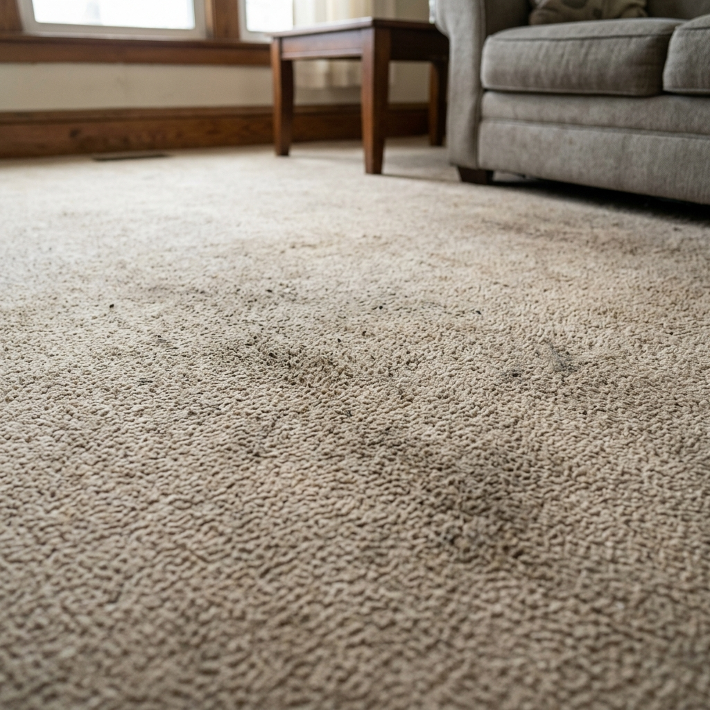

Residential · Carpet & rugs
Carpet & rug cleaning
Carpets hold a surprising amount of dust, sand and allergens — RAK living guarantees it. We pre-treat, agitate, deep-rinse and extract, then dry it down properly, so it looks lifted and feels clean underfoot again.


Drag to compare. (Real photos arriving soon.)
Steam vs. low-moisture
The right method for your carpet.
Hot-water extraction (steam)
The deepest clean — high-temperature solution injected and immediately vacuumed back out with the dirt. Best for most synthetic wall-to-wall carpet and heavily soiled areas. Dries in roughly 4–8 hours.
Low-moisture / encapsulation
A bonnet/encapsulation clean using minimal water — ideal for delicate, natural-fibre or glued-down carpets, and when the room can't be out of action for long. Walk-on-ready in 1–2 hours.
We assess the fibre, backing and condition first and recommend the method — and tell you the drying time before we start.
What's included
Every job covers the basics.
- Inspection & fibre/colour test
- Thorough vacuuming & debris removal
- Stain & high-traffic pre-treatment (incl. enzyme for pet marks)
- Deep extraction or encapsulation clean
- Edges, corners & under light furniture
- Deodorising & pile grooming, fans set for drying
How it works
Three steps, on site.
Inspect & vacuum
Identify the carpet type, move light furniture, vacuum deeply, then pre-treat stains and traffic lanes.
Clean & rinse
Steam extraction or low-moisture pad clean — agitated, rinsed and extracted in passes until the water runs clear.
Groom & dry
Deodorise, groom the pile in one direction, place air movers, and tell you when it's safe to walk on.
Pricing
Priced by area & condition.
Indicative starting prices — confirmed after we see the size and state. Bundle with sofa or curtain cleaning to save.
Loose rugs
from AED 8 / sq.ft
Area rugs and runners, cleaned on site or collected for delicate pieces.
Rooms
from AED 90 / room
Standard bedroom or living-room carpet, deep extraction. Most popular.
Whole home / office
custom
Apartments, villas and offices — quoted per area with a free measure-up.
FAQ
Carpet cleaning, answered.
"Booked them after a party left the living-room carpet in a state. Stains I'd written off — gone. The flat smelled fresh, not chemical, and it was dry by the evening."